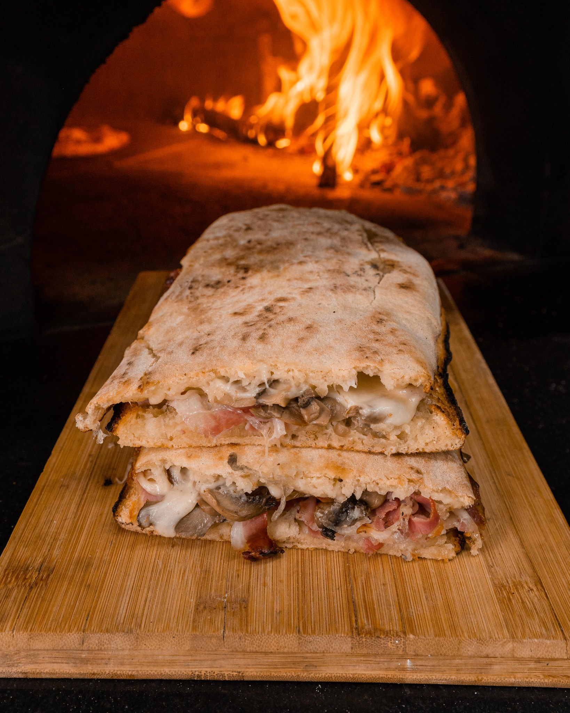

Panuozzo

Description
A form of street-food sandwich from Campania, served hot
Ingredients
- 1 kg Bread Flour
- 680 gr Cold refrigerator water
- 3 gr Fresh brewers yeast or 1 dry
- 25 gr Salt
- Cheeses of your choice (mozzarella, provola)
- fresh tomatoes
- mixed salad
- Extra virgin olive oil
Steps
- A spiral machine was used for the dough but it can be done both by hand and with a planetary mixer.
- Then add 90% of the water and await absorption by slightly increasing the speed (105 rpm). Once absorbed, add the salt and slowly add the remaining missing water, increasing the speed to 125 rpm.
- In 18 minutes dough closed, 25°
- I form a single loaf and put it in a closed oiled container for 1 hour at room temperature.
- After that I put it in the fridge for 16 hours
- Removed from the fridge, cut after 30 minutes and placed in starch for 6 hours and 30 minutes,
- Took 3 panielli weighing about 220 grams (with the others I made Neapolitans) spread without creating a ledge, giving an elongated shape
- Baked in Effeuno p134h at 400°, when it swells well I placed the paddle on the upper part of the Neapolitan panuozzo to prevent it from burning by going too close to the upper heating element
- Heated up today at 200° for 5/7 minutes turning it from time to time